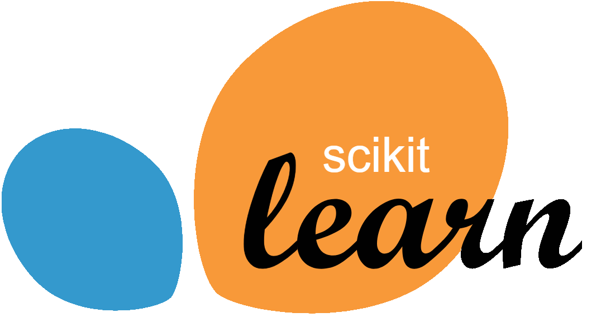

Framework que permite ejecutar código Python en clusters distribuidos usando Apache Spark, optimizando el procesamiento de grandes volúmenes de datos en paralelo y mejorando el rendimiento.
IA & BigData

Framework que permite ejecutar código Python en clusters distribuidos usando Apache Spark, optimizando el procesamiento de grandes volúmenes de datos en paralelo y mejorando el rendimiento.
El módulo OpenAI permite integrar modelos de inteligencia artificial de OpenAI: GPT 4 en tus aplicaciones hacer procesamiento de lenguaje natural, generación de texto o chat-bots, etc.
OpenCV es una biblioteca para procesamiento de imágenes y visión por computadora, que facilita tareas como detección de objetos, reconocimiento facial y manipulación de imagen y vídeo.
Scikit-learn (sklearn) es una biblioteca que proporciona algoritmos para modelos de machine learning: clasificación, regresión, clustering y reducción de dimensionalidad.
TensorFlow es una biblioteca de Python para construir y entrenar modelos de machine learning y deep learning , especializada en redes neuronales y procesamiento en GPUs o TPUs para mejorar el rendimiento.
Biblioteca para manipulación y análisis de datos, que proporciona estructuras como DataFrames para trabajar con datos tabulares de manera eficiente..
biblioteca para crear gráficos interactivos y visualizaciones avanzadas. Es compatible con gráficos 2D y 3D y tiene un amplio repertorio de gráficos interactivos.
Es la evolución de matplotlib: una biblioteca de visualización que facilita la creación de gráficos atractivos, proporcionando una interfaz simple para trabajar con datos tanto categóricos como continuos.
Chart.js es una Librería JavaScript que podemos utilizar para visualizar gráficos en el front-end, consumiéndolos de un back-end en Flask o Django. Véase ejemplo de un scatterplot debajo: